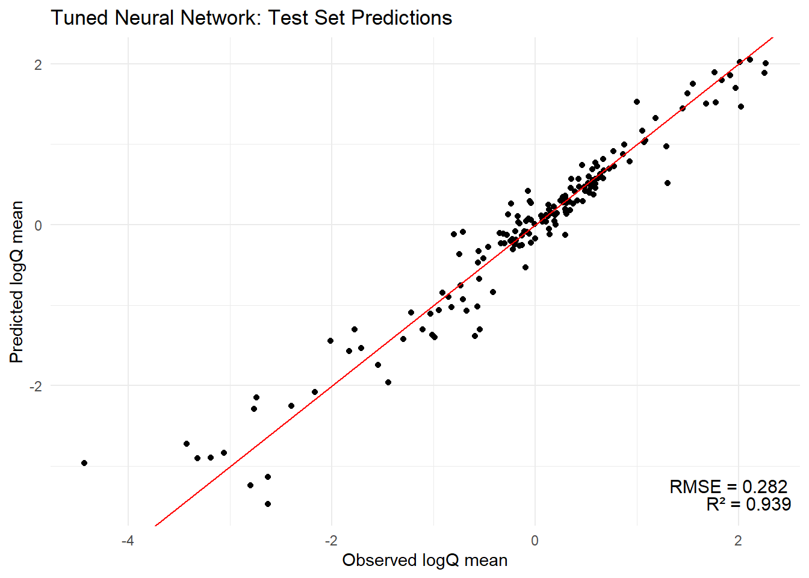

── Conflicts ────────────────────────────────────────── tidyverse_conflicts() ──
✖ readr::col_factor() masks scales::col_factor()
✖ purrr::discard() masks scales::discard()
✖ dplyr::filter() masks stats::filter()
✖ stringr::fixed() masks recipes::fixed()
✖ dplyr::lag() masks stats::lag()
✖ readr::spec() masks yardstick::spec()
ℹ Use the conflicted package (<http://conflicted.r-lib.org/>) to force all conflicts to become errors
library(powerjoin)
Warning: package 'powerjoin' was built under R version 4.4.3
library(glue)library(vip)
Warning: package 'vip' was built under R version 4.4.3
Attaching package: 'vip'
The following object is masked from 'package:utils':
vi
library(baguette)
Warning: package 'baguette' was built under R version 4.4.3
library(ggthemes)library(gridExtra)
Attaching package: 'gridExtra'
The following object is masked from 'package:dplyr':
combine
library(patchwork)
Warning: package 'patchwork' was built under R version 4.4.3
# Use the `findNLDI` function to get the basin and flowlines for the first gaugebasin <- dataRetrieval::findNLDI(nwis ="01013500", # Navigate the "upper tributaries" of the basinnav ="UT", # Return the basin and flowlinesfind =c("basin", "flowlines"))# Plot the basin, flowlines, and gauge ...ggplot() +geom_sf(data = basin$basin, fill ="lightblue") +geom_sf(data = basin$UT_flowlines, color ="blue") +geom_sf(data = basin$origin, color ="red") +theme_minimal()
# root url of where camels files are locatedroot <-'https://gdex.ucar.edu/dataset/camels/file'
# download pdf of camels attributesdownload.file('https://gdex.ucar.edu/dataset/camels/file/camels_attributes_v2.0.pdf', 'data/camels_attributes_v2.0.pdf')
# types of files we are interested intypes <-c("clim", "geol", "soil", "topo", "vege", "hydro")
# Where the files live online ...remote_files <-glue('{root}/camels_{types}.txt')# where we want to download the data ...local_files <-glue('data/camels_{types}.txt')
# download files from the set parameters to our local directorywalk2(remote_files, local_files, download.file, quiet =TRUE)
# Read and merge datacamels <-map(local_files, read_delim, show_col_types =FALSE)
# full join of every data.frame in the camels merged datacamels <-power_full_join(camels ,by ='gauge_id')
# Alternatively read and merge camels data directly from URL# this may fail if the url goes downcamels <-map(remote_files, read_delim, show_col_types =FALSE) |>power_full_join(by ='gauge_id')
# Create a scatter plot of aridity vs rainfallggplot(camels, aes(x = aridity, y = p_mean)) +# Add points colored by mean flowgeom_point(aes(color = q_mean)) +# Add a linear regression linegeom_smooth(method ="lm", color ="red", linetype =2) +# Apply the viridis color scalescale_color_viridis_c() +# Add a title, axis labels, and theme (w/ legend on the bottom)theme_linedraw() +theme(legend.position ="bottom") +labs(title ="Aridity vs Rainfall vs Runnoff", x ="Aridity", y ="Rainfall",color ="Mean Flow")
`geom_smooth()` using formula = 'y ~ x'
ggplot(camels, aes(x = aridity, y = p_mean)) +geom_point(aes(color = q_mean)) +geom_smooth(method ="lm") +scale_color_viridis_c() +# Apply log transformations to the x and y axesscale_x_log10() +scale_y_log10() +theme_linedraw() +theme(legend.position ="bottom") +labs(title ="Aridity vs Rainfall vs Runnoff", x ="Aridity", y ="Rainfall",color ="Mean Flow")
`geom_smooth()` using formula = 'y ~ x'
ggplot(camels, aes(x = aridity, y = p_mean)) +geom_point(aes(color = q_mean)) +geom_smooth(method ="lm") +# Apply a log transformation to the color scalescale_color_viridis_c(trans ="log") +scale_x_log10() +scale_y_log10() +theme_linedraw() +theme(legend.position ="bottom",# Expand the legend width ...legend.key.width =unit(2.5, "cm"),legend.key.height =unit(.5, "cm")) +labs(title ="Aridity vs Rainfall vs Runnoff", x ="Aridity", y ="Rainfall",color ="Mean Flow")
`geom_smooth()` using formula = 'y ~ x'
Model Building
set.seed(123)# Bad form to perform simple transformations on the outcome variable within a # recipe. So, we'll do it here.camels <- camels |>mutate(logQmean =log(q_mean))# Generate the splitcamels_split <-initial_split(camels, prop =0.8)camels_train <-training(camels_split)camels_test <-testing(camels_split)camels_cv <-vfold_cv(camels_train, v =10)
# Create a recipe to preprocess the datarec <-recipe(logQmean ~ aridity + p_mean, data = camels_train) %>%# Log transform the predictor variables (aridity and p_mean)step_log(all_predictors()) %>%# Add an interaction term between aridity and p_meanstep_interact(terms =~ aridity:p_mean) |># Drop any rows with missing values in the predstep_naomit(all_predictors(), all_outcomes())
# Prepare the databaked_data <-prep(rec, camels_train) |>bake(new_data =NULL)# Interaction with lm# Base lm sets interaction terms with the * symbollm_base <-lm(logQmean ~ aridity * p_mean, data = baked_data)summary(lm_base)
Call:
lm(formula = logQmean ~ aridity * p_mean, data = baked_data)
Residuals:
Min 1Q Median 3Q Max
-2.91162 -0.21601 -0.00716 0.21230 2.85706
Coefficients:
Estimate Std. Error t value Pr(>|t|)
(Intercept) -1.77586 0.16365 -10.852 < 2e-16 ***
aridity -0.88397 0.16145 -5.475 6.75e-08 ***
p_mean 1.48438 0.15511 9.570 < 2e-16 ***
aridity:p_mean 0.10484 0.07198 1.457 0.146
---
Signif. codes: 0 '***' 0.001 '**' 0.01 '*' 0.05 '.' 0.1 ' ' 1
Residual standard error: 0.5696 on 531 degrees of freedom
Multiple R-squared: 0.7697, Adjusted R-squared: 0.7684
F-statistic: 591.6 on 3 and 531 DF, p-value: < 2.2e-16
# Sanity Interaction term from recipe ... these should be equal!!summary(lm(logQmean ~ aridity + p_mean + aridity_x_p_mean, data = baked_data))
Call:
lm(formula = logQmean ~ aridity + p_mean + aridity_x_p_mean,
data = baked_data)
Residuals:
Min 1Q Median 3Q Max
-2.91162 -0.21601 -0.00716 0.21230 2.85706
Coefficients:
Estimate Std. Error t value Pr(>|t|)
(Intercept) -1.77586 0.16365 -10.852 < 2e-16 ***
aridity -0.88397 0.16145 -5.475 6.75e-08 ***
p_mean 1.48438 0.15511 9.570 < 2e-16 ***
aridity_x_p_mean 0.10484 0.07198 1.457 0.146
---
Signif. codes: 0 '***' 0.001 '**' 0.01 '*' 0.05 '.' 0.1 ' ' 1
Residual standard error: 0.5696 on 531 degrees of freedom
Multiple R-squared: 0.7697, Adjusted R-squared: 0.7684
F-statistic: 591.6 on 3 and 531 DF, p-value: < 2.2e-16
Wrong version 1: augment
nrow(camels_test)
[1] 135
nrow(camels_train)
[1] 536
#broom::augment(lm_base, data = camels_test)
Wrong version 2: predict
camels_test$p2 =predict(lm_base, newdata = camels_test)## Scales way off!ggplot(camels_test, aes(x = p2, y = logQmean)) +geom_point() +# Linear fit line, no error bandsgeom_smooth(method ="lm", se =FALSE, size =1) +# 1:1 linegeom_abline(color ="red", size =1) +labs(title ="Linear Model Using `predict()`",x ="Predicted Log Mean Flow",y ="Observed Log Mean Flow") +theme_linedraw()
Warning: Using `size` aesthetic for lines was deprecated in ggplot2 3.4.0.
ℹ Please use `linewidth` instead.
metrics(test_data, truth = logQmean, estimate = lm_pred)
# A tibble: 3 × 3
.metric .estimator .estimate
<chr> <chr> <dbl>
1 rmse standard 0.583
2 rsq standard 0.742
3 mae standard 0.390
ggplot(test_data, aes(x = logQmean, y = lm_pred, colour = aridity)) +# Apply a gradient color scalescale_color_gradient2(low ="brown", mid ="orange", high ="darkgreen") +geom_point() +geom_abline(linetype =2) +theme_linedraw() +labs(title ="Linear Model: Observed vs Predicted",x ="Observed Log Mean Flow",y ="Predicted Log Mean Flow",color ="Aridity")
Using a Workflow
# Define modellm_model <-linear_reg() %>%# define the engineset_engine("lm") %>%# define the modeset_mode("regression")# Instantiate a workflow ...lm_wf <-workflow() %>%# Add the recipeadd_recipe(rec) %>%# Add the modeladd_model(lm_model) %>%# Fit the model to the training datafit(data = camels_train) # Extract the model coefficients from the workflowsummary(extract_fit_engine(lm_wf))$coefficients
i No tuning parameters. `fit_resamples()` will be attempted
i 1 of 3 resampling: camels_recipe_rf
✔ 1 of 3 resampling: camels_recipe_rf (581ms)
i No tuning parameters. `fit_resamples()` will be attempted
i 2 of 3 resampling: camels_recipe_xgboost
Warning: package 'xgboost' was built under R version 4.4.3
✔ 2 of 3 resampling: camels_recipe_xgboost (250ms)
i No tuning parameters. `fit_resamples()` will be attempted
i 3 of 3 resampling: camels_recipe_neural_net
→ A | warning: There was 1 warning in `dplyr::mutate()`.
ℹ In argument: `model = iter(...)`.
Caused by warning:
! package 'future' was built under R version 4.4.3
There were issues with some computations A: x1
There were issues with some computations A: x1
✔ 3 of 3 resampling: camels_recipe_neural_net (3.4s)
collect_metrics(results)
# A tibble: 6 × 9
wflow_id .config preproc model .metric .estimator mean n std_err
<chr> <chr> <chr> <chr> <chr> <chr> <dbl> <int> <dbl>
1 camels_recipe_rf Prepro… recipe rand… rmse standard 0.569 5 0.0209
2 camels_recipe_rf Prepro… recipe rand… rsq standard 0.772 5 0.0144
3 camels_recipe_xg… Prepro… recipe boos… rmse standard 0.579 5 0.0124
4 camels_recipe_xg… Prepro… recipe boos… rsq standard 0.766 5 0.0148
5 camels_recipe_ne… Prepro… recipe bag_… rmse standard 0.553 5 0.0117
6 camels_recipe_ne… Prepro… recipe bag_… rsq standard 0.787 5 0.0126
autoplot(results) # nice visual comparison
I would choose the bag_mlp model since it has a smaller spread of rmse and the lowest rmse center. It also has a slightly higher rsq, but it not far from the other two model results.
Question 4
Data Spliting
# data splittingset.seed(123)# Split data into 75% train, 25% testcamels_split <-initial_split(camels, prop =0.75, strata = logQmean)camels_train <-training(camels_split)camels_test <-testing(camels_split)# 10-fold cross-validationcamels_folds <-vfold_cv(camels_train, v =10)
# Extract the neural network workflow from the model_setfinal_workflow <-extract_workflow(model_set, "camels_recipe_neural_net")# Fit the workflow to the entire training datafinal_fit <- final_workflow %>%fit(data = camels_train)# Generate predictions on the test set using augment()results_test <-augment(final_fit, new_data = camels_test)# Evaluate performance on the test settest_metrics <- results_test %>%metrics(truth = logQmean, estimate = .pred) %>%filter(.metric %in%c("rmse", "rsq"))print(test_metrics)
# A tibble: 2 × 3
.metric .estimator .estimate
<chr> <chr> <dbl>
1 rmse standard 0.343
2 rsq standard 0.910
Plot of Predicted vs. Observed for NN Model
ggplot(results_test, aes(x = logQmean, y = .pred)) +geom_point() +geom_abline() +geom_smooth(method ="lm", col ='red', lty =2, se =FALSE) +theme_linedraw() +labs(x ="Observed logQmean", y ="Predicted logQmean", title ="Neural Net Model: Observed vs. Predicted")
`geom_smooth()` using formula = 'y ~ x'
The neural net model is the best because it has the highest (and only) R2 value over 0.9. The RMSE is also relative low, indicating that the sensitivity to outliers is less than the other models.
Model Tuning
# neural network model with tunable hyperparametersnn_model_tune <-mlp(hidden_units =tune(), # Tune number of hidden unitspenalty =tune(), # Tune regularization penaltyepochs =100# Fixed number of epochs (adjust if needed)) %>%set_engine("nnet") %>%set_mode("regression")# workflow for the neural networknn_workflow <-workflow() %>%add_recipe(rec) %>%add_model(nn_model_tune)# Define a grid of hyperparameters to tunenn_grid <-grid_regular(hidden_units(range =c(4, 10)), # Try 4 to 10 hidden unitspenalty(range =c(-3, 0)), # Try 10^-3 to 10^0 (0.001 to 1)levels =c(4, 4) # 4 levels for each parameter (16 combinations))# Tune the model using tune_gridset.seed(123)nn_tune_results <- nn_workflow %>%tune_grid(resamples = camels_folds,grid = nn_grid,metrics =metric_set(rmse, rsq),control =control_grid(verbose =TRUE) )
i Fold01: preprocessor 1/1
✓ Fold01: preprocessor 1/1
i Fold01: preprocessor 1/1, model 1/16
✓ Fold01: preprocessor 1/1, model 1/16
i Fold01: preprocessor 1/1, model 1/16 (extracts)
i Fold01: preprocessor 1/1, model 1/16 (predictions)
i Fold01: preprocessor 1/1, model 2/16
✓ Fold01: preprocessor 1/1, model 2/16
i Fold01: preprocessor 1/1, model 2/16 (extracts)
i Fold01: preprocessor 1/1, model 2/16 (predictions)
i Fold01: preprocessor 1/1, model 3/16
✓ Fold01: preprocessor 1/1, model 3/16
i Fold01: preprocessor 1/1, model 3/16 (extracts)
i Fold01: preprocessor 1/1, model 3/16 (predictions)
i Fold01: preprocessor 1/1, model 4/16
✓ Fold01: preprocessor 1/1, model 4/16
i Fold01: preprocessor 1/1, model 4/16 (extracts)
i Fold01: preprocessor 1/1, model 4/16 (predictions)
i Fold01: preprocessor 1/1, model 5/16
✓ Fold01: preprocessor 1/1, model 5/16
i Fold01: preprocessor 1/1, model 5/16 (extracts)
i Fold01: preprocessor 1/1, model 5/16 (predictions)
i Fold01: preprocessor 1/1, model 6/16
✓ Fold01: preprocessor 1/1, model 6/16
i Fold01: preprocessor 1/1, model 6/16 (extracts)
i Fold01: preprocessor 1/1, model 6/16 (predictions)
i Fold01: preprocessor 1/1, model 7/16
✓ Fold01: preprocessor 1/1, model 7/16
i Fold01: preprocessor 1/1, model 7/16 (extracts)
i Fold01: preprocessor 1/1, model 7/16 (predictions)
i Fold01: preprocessor 1/1, model 8/16
✓ Fold01: preprocessor 1/1, model 8/16
i Fold01: preprocessor 1/1, model 8/16 (extracts)
i Fold01: preprocessor 1/1, model 8/16 (predictions)
i Fold01: preprocessor 1/1, model 9/16
✓ Fold01: preprocessor 1/1, model 9/16
i Fold01: preprocessor 1/1, model 9/16 (extracts)
i Fold01: preprocessor 1/1, model 9/16 (predictions)
i Fold01: preprocessor 1/1, model 10/16
✓ Fold01: preprocessor 1/1, model 10/16
i Fold01: preprocessor 1/1, model 10/16 (extracts)
i Fold01: preprocessor 1/1, model 10/16 (predictions)
i Fold01: preprocessor 1/1, model 11/16
✓ Fold01: preprocessor 1/1, model 11/16
i Fold01: preprocessor 1/1, model 11/16 (extracts)
i Fold01: preprocessor 1/1, model 11/16 (predictions)
i Fold01: preprocessor 1/1, model 12/16
✓ Fold01: preprocessor 1/1, model 12/16
i Fold01: preprocessor 1/1, model 12/16 (extracts)
i Fold01: preprocessor 1/1, model 12/16 (predictions)
i Fold01: preprocessor 1/1, model 13/16
✓ Fold01: preprocessor 1/1, model 13/16
i Fold01: preprocessor 1/1, model 13/16 (extracts)
i Fold01: preprocessor 1/1, model 13/16 (predictions)
i Fold01: preprocessor 1/1, model 14/16
✓ Fold01: preprocessor 1/1, model 14/16
i Fold01: preprocessor 1/1, model 14/16 (extracts)
i Fold01: preprocessor 1/1, model 14/16 (predictions)
i Fold01: preprocessor 1/1, model 15/16
✓ Fold01: preprocessor 1/1, model 15/16
i Fold01: preprocessor 1/1, model 15/16 (extracts)
i Fold01: preprocessor 1/1, model 15/16 (predictions)
i Fold01: preprocessor 1/1, model 16/16
✓ Fold01: preprocessor 1/1, model 16/16
i Fold01: preprocessor 1/1, model 16/16 (extracts)
i Fold01: preprocessor 1/1, model 16/16 (predictions)
i Fold02: preprocessor 1/1
✓ Fold02: preprocessor 1/1
i Fold02: preprocessor 1/1, model 1/16
✓ Fold02: preprocessor 1/1, model 1/16
i Fold02: preprocessor 1/1, model 1/16 (extracts)
i Fold02: preprocessor 1/1, model 1/16 (predictions)
i Fold02: preprocessor 1/1, model 2/16
✓ Fold02: preprocessor 1/1, model 2/16
i Fold02: preprocessor 1/1, model 2/16 (extracts)
i Fold02: preprocessor 1/1, model 2/16 (predictions)
i Fold02: preprocessor 1/1, model 3/16
✓ Fold02: preprocessor 1/1, model 3/16
i Fold02: preprocessor 1/1, model 3/16 (extracts)
i Fold02: preprocessor 1/1, model 3/16 (predictions)
i Fold02: preprocessor 1/1, model 4/16
✓ Fold02: preprocessor 1/1, model 4/16
i Fold02: preprocessor 1/1, model 4/16 (extracts)
i Fold02: preprocessor 1/1, model 4/16 (predictions)
i Fold02: preprocessor 1/1, model 5/16
✓ Fold02: preprocessor 1/1, model 5/16
i Fold02: preprocessor 1/1, model 5/16 (extracts)
i Fold02: preprocessor 1/1, model 5/16 (predictions)
i Fold02: preprocessor 1/1, model 6/16
✓ Fold02: preprocessor 1/1, model 6/16
i Fold02: preprocessor 1/1, model 6/16 (extracts)
i Fold02: preprocessor 1/1, model 6/16 (predictions)
i Fold02: preprocessor 1/1, model 7/16
✓ Fold02: preprocessor 1/1, model 7/16
i Fold02: preprocessor 1/1, model 7/16 (extracts)
i Fold02: preprocessor 1/1, model 7/16 (predictions)
i Fold02: preprocessor 1/1, model 8/16
✓ Fold02: preprocessor 1/1, model 8/16
i Fold02: preprocessor 1/1, model 8/16 (extracts)
i Fold02: preprocessor 1/1, model 8/16 (predictions)
i Fold02: preprocessor 1/1, model 9/16
✓ Fold02: preprocessor 1/1, model 9/16
i Fold02: preprocessor 1/1, model 9/16 (extracts)
i Fold02: preprocessor 1/1, model 9/16 (predictions)
i Fold02: preprocessor 1/1, model 10/16
✓ Fold02: preprocessor 1/1, model 10/16
i Fold02: preprocessor 1/1, model 10/16 (extracts)
i Fold02: preprocessor 1/1, model 10/16 (predictions)
i Fold02: preprocessor 1/1, model 11/16
✓ Fold02: preprocessor 1/1, model 11/16
i Fold02: preprocessor 1/1, model 11/16 (extracts)
i Fold02: preprocessor 1/1, model 11/16 (predictions)
i Fold02: preprocessor 1/1, model 12/16
✓ Fold02: preprocessor 1/1, model 12/16
i Fold02: preprocessor 1/1, model 12/16 (extracts)
i Fold02: preprocessor 1/1, model 12/16 (predictions)
i Fold02: preprocessor 1/1, model 13/16
✓ Fold02: preprocessor 1/1, model 13/16
i Fold02: preprocessor 1/1, model 13/16 (extracts)
i Fold02: preprocessor 1/1, model 13/16 (predictions)
i Fold02: preprocessor 1/1, model 14/16
✓ Fold02: preprocessor 1/1, model 14/16
i Fold02: preprocessor 1/1, model 14/16 (extracts)
i Fold02: preprocessor 1/1, model 14/16 (predictions)
i Fold02: preprocessor 1/1, model 15/16
✓ Fold02: preprocessor 1/1, model 15/16
i Fold02: preprocessor 1/1, model 15/16 (extracts)
i Fold02: preprocessor 1/1, model 15/16 (predictions)
i Fold02: preprocessor 1/1, model 16/16
✓ Fold02: preprocessor 1/1, model 16/16
i Fold02: preprocessor 1/1, model 16/16 (extracts)
i Fold02: preprocessor 1/1, model 16/16 (predictions)
i Fold03: preprocessor 1/1
✓ Fold03: preprocessor 1/1
i Fold03: preprocessor 1/1, model 1/16
✓ Fold03: preprocessor 1/1, model 1/16
i Fold03: preprocessor 1/1, model 1/16 (extracts)
i Fold03: preprocessor 1/1, model 1/16 (predictions)
i Fold03: preprocessor 1/1, model 2/16
✓ Fold03: preprocessor 1/1, model 2/16
i Fold03: preprocessor 1/1, model 2/16 (extracts)
i Fold03: preprocessor 1/1, model 2/16 (predictions)
i Fold03: preprocessor 1/1, model 3/16
✓ Fold03: preprocessor 1/1, model 3/16
i Fold03: preprocessor 1/1, model 3/16 (extracts)
i Fold03: preprocessor 1/1, model 3/16 (predictions)
i Fold03: preprocessor 1/1, model 4/16
✓ Fold03: preprocessor 1/1, model 4/16
i Fold03: preprocessor 1/1, model 4/16 (extracts)
i Fold03: preprocessor 1/1, model 4/16 (predictions)
i Fold03: preprocessor 1/1, model 5/16
✓ Fold03: preprocessor 1/1, model 5/16
i Fold03: preprocessor 1/1, model 5/16 (extracts)
i Fold03: preprocessor 1/1, model 5/16 (predictions)
i Fold03: preprocessor 1/1, model 6/16
✓ Fold03: preprocessor 1/1, model 6/16
i Fold03: preprocessor 1/1, model 6/16 (extracts)
i Fold03: preprocessor 1/1, model 6/16 (predictions)
i Fold03: preprocessor 1/1, model 7/16
✓ Fold03: preprocessor 1/1, model 7/16
i Fold03: preprocessor 1/1, model 7/16 (extracts)
i Fold03: preprocessor 1/1, model 7/16 (predictions)
i Fold03: preprocessor 1/1, model 8/16
✓ Fold03: preprocessor 1/1, model 8/16
i Fold03: preprocessor 1/1, model 8/16 (extracts)
i Fold03: preprocessor 1/1, model 8/16 (predictions)
i Fold03: preprocessor 1/1, model 9/16
✓ Fold03: preprocessor 1/1, model 9/16
i Fold03: preprocessor 1/1, model 9/16 (extracts)
i Fold03: preprocessor 1/1, model 9/16 (predictions)
i Fold03: preprocessor 1/1, model 10/16
✓ Fold03: preprocessor 1/1, model 10/16
i Fold03: preprocessor 1/1, model 10/16 (extracts)
i Fold03: preprocessor 1/1, model 10/16 (predictions)
i Fold03: preprocessor 1/1, model 11/16
✓ Fold03: preprocessor 1/1, model 11/16
i Fold03: preprocessor 1/1, model 11/16 (extracts)
i Fold03: preprocessor 1/1, model 11/16 (predictions)
i Fold03: preprocessor 1/1, model 12/16
✓ Fold03: preprocessor 1/1, model 12/16
i Fold03: preprocessor 1/1, model 12/16 (extracts)
i Fold03: preprocessor 1/1, model 12/16 (predictions)
i Fold03: preprocessor 1/1, model 13/16
✓ Fold03: preprocessor 1/1, model 13/16
i Fold03: preprocessor 1/1, model 13/16 (extracts)
i Fold03: preprocessor 1/1, model 13/16 (predictions)
i Fold03: preprocessor 1/1, model 14/16
✓ Fold03: preprocessor 1/1, model 14/16
i Fold03: preprocessor 1/1, model 14/16 (extracts)
i Fold03: preprocessor 1/1, model 14/16 (predictions)
i Fold03: preprocessor 1/1, model 15/16
✓ Fold03: preprocessor 1/1, model 15/16
i Fold03: preprocessor 1/1, model 15/16 (extracts)
i Fold03: preprocessor 1/1, model 15/16 (predictions)
i Fold03: preprocessor 1/1, model 16/16
✓ Fold03: preprocessor 1/1, model 16/16
i Fold03: preprocessor 1/1, model 16/16 (extracts)
i Fold03: preprocessor 1/1, model 16/16 (predictions)
i Fold04: preprocessor 1/1
✓ Fold04: preprocessor 1/1
i Fold04: preprocessor 1/1, model 1/16
✓ Fold04: preprocessor 1/1, model 1/16
i Fold04: preprocessor 1/1, model 1/16 (extracts)
i Fold04: preprocessor 1/1, model 1/16 (predictions)
i Fold04: preprocessor 1/1, model 2/16
✓ Fold04: preprocessor 1/1, model 2/16
i Fold04: preprocessor 1/1, model 2/16 (extracts)
i Fold04: preprocessor 1/1, model 2/16 (predictions)
i Fold04: preprocessor 1/1, model 3/16
✓ Fold04: preprocessor 1/1, model 3/16
i Fold04: preprocessor 1/1, model 3/16 (extracts)
i Fold04: preprocessor 1/1, model 3/16 (predictions)
i Fold04: preprocessor 1/1, model 4/16
✓ Fold04: preprocessor 1/1, model 4/16
i Fold04: preprocessor 1/1, model 4/16 (extracts)
i Fold04: preprocessor 1/1, model 4/16 (predictions)
i Fold04: preprocessor 1/1, model 5/16
✓ Fold04: preprocessor 1/1, model 5/16
i Fold04: preprocessor 1/1, model 5/16 (extracts)
i Fold04: preprocessor 1/1, model 5/16 (predictions)
i Fold04: preprocessor 1/1, model 6/16
✓ Fold04: preprocessor 1/1, model 6/16
i Fold04: preprocessor 1/1, model 6/16 (extracts)
i Fold04: preprocessor 1/1, model 6/16 (predictions)
i Fold04: preprocessor 1/1, model 7/16
✓ Fold04: preprocessor 1/1, model 7/16
i Fold04: preprocessor 1/1, model 7/16 (extracts)
i Fold04: preprocessor 1/1, model 7/16 (predictions)
i Fold04: preprocessor 1/1, model 8/16
✓ Fold04: preprocessor 1/1, model 8/16
i Fold04: preprocessor 1/1, model 8/16 (extracts)
i Fold04: preprocessor 1/1, model 8/16 (predictions)
i Fold04: preprocessor 1/1, model 9/16
✓ Fold04: preprocessor 1/1, model 9/16
i Fold04: preprocessor 1/1, model 9/16 (extracts)
i Fold04: preprocessor 1/1, model 9/16 (predictions)
i Fold04: preprocessor 1/1, model 10/16
✓ Fold04: preprocessor 1/1, model 10/16
i Fold04: preprocessor 1/1, model 10/16 (extracts)
i Fold04: preprocessor 1/1, model 10/16 (predictions)
i Fold04: preprocessor 1/1, model 11/16
✓ Fold04: preprocessor 1/1, model 11/16
i Fold04: preprocessor 1/1, model 11/16 (extracts)
i Fold04: preprocessor 1/1, model 11/16 (predictions)
i Fold04: preprocessor 1/1, model 12/16
✓ Fold04: preprocessor 1/1, model 12/16
i Fold04: preprocessor 1/1, model 12/16 (extracts)
i Fold04: preprocessor 1/1, model 12/16 (predictions)
i Fold04: preprocessor 1/1, model 13/16
✓ Fold04: preprocessor 1/1, model 13/16
i Fold04: preprocessor 1/1, model 13/16 (extracts)
i Fold04: preprocessor 1/1, model 13/16 (predictions)
i Fold04: preprocessor 1/1, model 14/16
✓ Fold04: preprocessor 1/1, model 14/16
i Fold04: preprocessor 1/1, model 14/16 (extracts)
i Fold04: preprocessor 1/1, model 14/16 (predictions)
i Fold04: preprocessor 1/1, model 15/16
✓ Fold04: preprocessor 1/1, model 15/16
i Fold04: preprocessor 1/1, model 15/16 (extracts)
i Fold04: preprocessor 1/1, model 15/16 (predictions)
i Fold04: preprocessor 1/1, model 16/16
✓ Fold04: preprocessor 1/1, model 16/16
i Fold04: preprocessor 1/1, model 16/16 (extracts)
i Fold04: preprocessor 1/1, model 16/16 (predictions)
i Fold05: preprocessor 1/1
✓ Fold05: preprocessor 1/1
i Fold05: preprocessor 1/1, model 1/16
✓ Fold05: preprocessor 1/1, model 1/16
i Fold05: preprocessor 1/1, model 1/16 (extracts)
i Fold05: preprocessor 1/1, model 1/16 (predictions)
i Fold05: preprocessor 1/1, model 2/16
✓ Fold05: preprocessor 1/1, model 2/16
i Fold05: preprocessor 1/1, model 2/16 (extracts)
i Fold05: preprocessor 1/1, model 2/16 (predictions)
i Fold05: preprocessor 1/1, model 3/16
✓ Fold05: preprocessor 1/1, model 3/16
i Fold05: preprocessor 1/1, model 3/16 (extracts)
i Fold05: preprocessor 1/1, model 3/16 (predictions)
i Fold05: preprocessor 1/1, model 4/16
✓ Fold05: preprocessor 1/1, model 4/16
i Fold05: preprocessor 1/1, model 4/16 (extracts)
i Fold05: preprocessor 1/1, model 4/16 (predictions)
i Fold05: preprocessor 1/1, model 5/16
✓ Fold05: preprocessor 1/1, model 5/16
i Fold05: preprocessor 1/1, model 5/16 (extracts)
i Fold05: preprocessor 1/1, model 5/16 (predictions)
i Fold05: preprocessor 1/1, model 6/16
✓ Fold05: preprocessor 1/1, model 6/16
i Fold05: preprocessor 1/1, model 6/16 (extracts)
i Fold05: preprocessor 1/1, model 6/16 (predictions)
i Fold05: preprocessor 1/1, model 7/16
✓ Fold05: preprocessor 1/1, model 7/16
i Fold05: preprocessor 1/1, model 7/16 (extracts)
i Fold05: preprocessor 1/1, model 7/16 (predictions)
i Fold05: preprocessor 1/1, model 8/16
✓ Fold05: preprocessor 1/1, model 8/16
i Fold05: preprocessor 1/1, model 8/16 (extracts)
i Fold05: preprocessor 1/1, model 8/16 (predictions)
i Fold05: preprocessor 1/1, model 9/16
✓ Fold05: preprocessor 1/1, model 9/16
i Fold05: preprocessor 1/1, model 9/16 (extracts)
i Fold05: preprocessor 1/1, model 9/16 (predictions)
i Fold05: preprocessor 1/1, model 10/16
✓ Fold05: preprocessor 1/1, model 10/16
i Fold05: preprocessor 1/1, model 10/16 (extracts)
i Fold05: preprocessor 1/1, model 10/16 (predictions)
i Fold05: preprocessor 1/1, model 11/16
✓ Fold05: preprocessor 1/1, model 11/16
i Fold05: preprocessor 1/1, model 11/16 (extracts)
i Fold05: preprocessor 1/1, model 11/16 (predictions)
i Fold05: preprocessor 1/1, model 12/16
✓ Fold05: preprocessor 1/1, model 12/16
i Fold05: preprocessor 1/1, model 12/16 (extracts)
i Fold05: preprocessor 1/1, model 12/16 (predictions)
i Fold05: preprocessor 1/1, model 13/16
✓ Fold05: preprocessor 1/1, model 13/16
i Fold05: preprocessor 1/1, model 13/16 (extracts)
i Fold05: preprocessor 1/1, model 13/16 (predictions)
i Fold05: preprocessor 1/1, model 14/16
✓ Fold05: preprocessor 1/1, model 14/16
i Fold05: preprocessor 1/1, model 14/16 (extracts)
i Fold05: preprocessor 1/1, model 14/16 (predictions)
i Fold05: preprocessor 1/1, model 15/16
✓ Fold05: preprocessor 1/1, model 15/16
i Fold05: preprocessor 1/1, model 15/16 (extracts)
i Fold05: preprocessor 1/1, model 15/16 (predictions)
i Fold05: preprocessor 1/1, model 16/16
✓ Fold05: preprocessor 1/1, model 16/16
i Fold05: preprocessor 1/1, model 16/16 (extracts)
i Fold05: preprocessor 1/1, model 16/16 (predictions)
i Fold06: preprocessor 1/1
✓ Fold06: preprocessor 1/1
i Fold06: preprocessor 1/1, model 1/16
✓ Fold06: preprocessor 1/1, model 1/16
i Fold06: preprocessor 1/1, model 1/16 (extracts)
i Fold06: preprocessor 1/1, model 1/16 (predictions)
i Fold06: preprocessor 1/1, model 2/16
✓ Fold06: preprocessor 1/1, model 2/16
i Fold06: preprocessor 1/1, model 2/16 (extracts)
i Fold06: preprocessor 1/1, model 2/16 (predictions)
i Fold06: preprocessor 1/1, model 3/16
✓ Fold06: preprocessor 1/1, model 3/16
i Fold06: preprocessor 1/1, model 3/16 (extracts)
i Fold06: preprocessor 1/1, model 3/16 (predictions)
i Fold06: preprocessor 1/1, model 4/16
✓ Fold06: preprocessor 1/1, model 4/16
i Fold06: preprocessor 1/1, model 4/16 (extracts)
i Fold06: preprocessor 1/1, model 4/16 (predictions)
i Fold06: preprocessor 1/1, model 5/16
✓ Fold06: preprocessor 1/1, model 5/16
i Fold06: preprocessor 1/1, model 5/16 (extracts)
i Fold06: preprocessor 1/1, model 5/16 (predictions)
i Fold06: preprocessor 1/1, model 6/16
✓ Fold06: preprocessor 1/1, model 6/16
i Fold06: preprocessor 1/1, model 6/16 (extracts)
i Fold06: preprocessor 1/1, model 6/16 (predictions)
i Fold06: preprocessor 1/1, model 7/16
✓ Fold06: preprocessor 1/1, model 7/16
i Fold06: preprocessor 1/1, model 7/16 (extracts)
i Fold06: preprocessor 1/1, model 7/16 (predictions)
i Fold06: preprocessor 1/1, model 8/16
✓ Fold06: preprocessor 1/1, model 8/16
i Fold06: preprocessor 1/1, model 8/16 (extracts)
i Fold06: preprocessor 1/1, model 8/16 (predictions)
i Fold06: preprocessor 1/1, model 9/16
✓ Fold06: preprocessor 1/1, model 9/16
i Fold06: preprocessor 1/1, model 9/16 (extracts)
i Fold06: preprocessor 1/1, model 9/16 (predictions)
i Fold06: preprocessor 1/1, model 10/16
✓ Fold06: preprocessor 1/1, model 10/16
i Fold06: preprocessor 1/1, model 10/16 (extracts)
i Fold06: preprocessor 1/1, model 10/16 (predictions)
i Fold06: preprocessor 1/1, model 11/16
✓ Fold06: preprocessor 1/1, model 11/16
i Fold06: preprocessor 1/1, model 11/16 (extracts)
i Fold06: preprocessor 1/1, model 11/16 (predictions)
i Fold06: preprocessor 1/1, model 12/16
✓ Fold06: preprocessor 1/1, model 12/16
i Fold06: preprocessor 1/1, model 12/16 (extracts)
i Fold06: preprocessor 1/1, model 12/16 (predictions)
i Fold06: preprocessor 1/1, model 13/16
✓ Fold06: preprocessor 1/1, model 13/16
i Fold06: preprocessor 1/1, model 13/16 (extracts)
i Fold06: preprocessor 1/1, model 13/16 (predictions)
i Fold06: preprocessor 1/1, model 14/16
✓ Fold06: preprocessor 1/1, model 14/16
i Fold06: preprocessor 1/1, model 14/16 (extracts)
i Fold06: preprocessor 1/1, model 14/16 (predictions)
i Fold06: preprocessor 1/1, model 15/16
✓ Fold06: preprocessor 1/1, model 15/16
i Fold06: preprocessor 1/1, model 15/16 (extracts)
i Fold06: preprocessor 1/1, model 15/16 (predictions)
i Fold06: preprocessor 1/1, model 16/16
✓ Fold06: preprocessor 1/1, model 16/16
i Fold06: preprocessor 1/1, model 16/16 (extracts)
i Fold06: preprocessor 1/1, model 16/16 (predictions)
i Fold07: preprocessor 1/1
✓ Fold07: preprocessor 1/1
i Fold07: preprocessor 1/1, model 1/16
✓ Fold07: preprocessor 1/1, model 1/16
i Fold07: preprocessor 1/1, model 1/16 (extracts)
i Fold07: preprocessor 1/1, model 1/16 (predictions)
i Fold07: preprocessor 1/1, model 2/16
✓ Fold07: preprocessor 1/1, model 2/16
i Fold07: preprocessor 1/1, model 2/16 (extracts)
i Fold07: preprocessor 1/1, model 2/16 (predictions)
i Fold07: preprocessor 1/1, model 3/16
✓ Fold07: preprocessor 1/1, model 3/16
i Fold07: preprocessor 1/1, model 3/16 (extracts)
i Fold07: preprocessor 1/1, model 3/16 (predictions)
i Fold07: preprocessor 1/1, model 4/16
✓ Fold07: preprocessor 1/1, model 4/16
i Fold07: preprocessor 1/1, model 4/16 (extracts)
i Fold07: preprocessor 1/1, model 4/16 (predictions)
i Fold07: preprocessor 1/1, model 5/16
✓ Fold07: preprocessor 1/1, model 5/16
i Fold07: preprocessor 1/1, model 5/16 (extracts)
i Fold07: preprocessor 1/1, model 5/16 (predictions)
i Fold07: preprocessor 1/1, model 6/16
✓ Fold07: preprocessor 1/1, model 6/16
i Fold07: preprocessor 1/1, model 6/16 (extracts)
i Fold07: preprocessor 1/1, model 6/16 (predictions)
i Fold07: preprocessor 1/1, model 7/16
✓ Fold07: preprocessor 1/1, model 7/16
i Fold07: preprocessor 1/1, model 7/16 (extracts)
i Fold07: preprocessor 1/1, model 7/16 (predictions)
i Fold07: preprocessor 1/1, model 8/16
✓ Fold07: preprocessor 1/1, model 8/16
i Fold07: preprocessor 1/1, model 8/16 (extracts)
i Fold07: preprocessor 1/1, model 8/16 (predictions)
i Fold07: preprocessor 1/1, model 9/16
✓ Fold07: preprocessor 1/1, model 9/16
i Fold07: preprocessor 1/1, model 9/16 (extracts)
i Fold07: preprocessor 1/1, model 9/16 (predictions)
i Fold07: preprocessor 1/1, model 10/16
✓ Fold07: preprocessor 1/1, model 10/16
i Fold07: preprocessor 1/1, model 10/16 (extracts)
i Fold07: preprocessor 1/1, model 10/16 (predictions)
i Fold07: preprocessor 1/1, model 11/16
✓ Fold07: preprocessor 1/1, model 11/16
i Fold07: preprocessor 1/1, model 11/16 (extracts)
i Fold07: preprocessor 1/1, model 11/16 (predictions)
i Fold07: preprocessor 1/1, model 12/16
✓ Fold07: preprocessor 1/1, model 12/16
i Fold07: preprocessor 1/1, model 12/16 (extracts)
i Fold07: preprocessor 1/1, model 12/16 (predictions)
i Fold07: preprocessor 1/1, model 13/16
✓ Fold07: preprocessor 1/1, model 13/16
i Fold07: preprocessor 1/1, model 13/16 (extracts)
i Fold07: preprocessor 1/1, model 13/16 (predictions)
i Fold07: preprocessor 1/1, model 14/16
✓ Fold07: preprocessor 1/1, model 14/16
i Fold07: preprocessor 1/1, model 14/16 (extracts)
i Fold07: preprocessor 1/1, model 14/16 (predictions)
i Fold07: preprocessor 1/1, model 15/16
✓ Fold07: preprocessor 1/1, model 15/16
i Fold07: preprocessor 1/1, model 15/16 (extracts)
i Fold07: preprocessor 1/1, model 15/16 (predictions)
i Fold07: preprocessor 1/1, model 16/16
✓ Fold07: preprocessor 1/1, model 16/16
i Fold07: preprocessor 1/1, model 16/16 (extracts)
i Fold07: preprocessor 1/1, model 16/16 (predictions)
i Fold08: preprocessor 1/1
✓ Fold08: preprocessor 1/1
i Fold08: preprocessor 1/1, model 1/16
✓ Fold08: preprocessor 1/1, model 1/16
i Fold08: preprocessor 1/1, model 1/16 (extracts)
i Fold08: preprocessor 1/1, model 1/16 (predictions)
i Fold08: preprocessor 1/1, model 2/16
✓ Fold08: preprocessor 1/1, model 2/16
i Fold08: preprocessor 1/1, model 2/16 (extracts)
i Fold08: preprocessor 1/1, model 2/16 (predictions)
i Fold08: preprocessor 1/1, model 3/16
✓ Fold08: preprocessor 1/1, model 3/16
i Fold08: preprocessor 1/1, model 3/16 (extracts)
i Fold08: preprocessor 1/1, model 3/16 (predictions)
i Fold08: preprocessor 1/1, model 4/16
✓ Fold08: preprocessor 1/1, model 4/16
i Fold08: preprocessor 1/1, model 4/16 (extracts)
i Fold08: preprocessor 1/1, model 4/16 (predictions)
i Fold08: preprocessor 1/1, model 5/16
✓ Fold08: preprocessor 1/1, model 5/16
i Fold08: preprocessor 1/1, model 5/16 (extracts)
i Fold08: preprocessor 1/1, model 5/16 (predictions)
i Fold08: preprocessor 1/1, model 6/16
✓ Fold08: preprocessor 1/1, model 6/16
i Fold08: preprocessor 1/1, model 6/16 (extracts)
i Fold08: preprocessor 1/1, model 6/16 (predictions)
i Fold08: preprocessor 1/1, model 7/16
✓ Fold08: preprocessor 1/1, model 7/16
i Fold08: preprocessor 1/1, model 7/16 (extracts)
i Fold08: preprocessor 1/1, model 7/16 (predictions)
i Fold08: preprocessor 1/1, model 8/16
✓ Fold08: preprocessor 1/1, model 8/16
i Fold08: preprocessor 1/1, model 8/16 (extracts)
i Fold08: preprocessor 1/1, model 8/16 (predictions)
i Fold08: preprocessor 1/1, model 9/16
✓ Fold08: preprocessor 1/1, model 9/16
i Fold08: preprocessor 1/1, model 9/16 (extracts)
i Fold08: preprocessor 1/1, model 9/16 (predictions)
i Fold08: preprocessor 1/1, model 10/16
✓ Fold08: preprocessor 1/1, model 10/16
i Fold08: preprocessor 1/1, model 10/16 (extracts)
i Fold08: preprocessor 1/1, model 10/16 (predictions)
i Fold08: preprocessor 1/1, model 11/16
✓ Fold08: preprocessor 1/1, model 11/16
i Fold08: preprocessor 1/1, model 11/16 (extracts)
i Fold08: preprocessor 1/1, model 11/16 (predictions)
i Fold08: preprocessor 1/1, model 12/16
✓ Fold08: preprocessor 1/1, model 12/16
i Fold08: preprocessor 1/1, model 12/16 (extracts)
i Fold08: preprocessor 1/1, model 12/16 (predictions)
i Fold08: preprocessor 1/1, model 13/16
✓ Fold08: preprocessor 1/1, model 13/16
i Fold08: preprocessor 1/1, model 13/16 (extracts)
i Fold08: preprocessor 1/1, model 13/16 (predictions)
i Fold08: preprocessor 1/1, model 14/16
✓ Fold08: preprocessor 1/1, model 14/16
i Fold08: preprocessor 1/1, model 14/16 (extracts)
i Fold08: preprocessor 1/1, model 14/16 (predictions)
i Fold08: preprocessor 1/1, model 15/16
✓ Fold08: preprocessor 1/1, model 15/16
i Fold08: preprocessor 1/1, model 15/16 (extracts)
i Fold08: preprocessor 1/1, model 15/16 (predictions)
i Fold08: preprocessor 1/1, model 16/16
✓ Fold08: preprocessor 1/1, model 16/16
i Fold08: preprocessor 1/1, model 16/16 (extracts)
i Fold08: preprocessor 1/1, model 16/16 (predictions)
i Fold09: preprocessor 1/1
✓ Fold09: preprocessor 1/1
i Fold09: preprocessor 1/1, model 1/16
✓ Fold09: preprocessor 1/1, model 1/16
i Fold09: preprocessor 1/1, model 1/16 (extracts)
i Fold09: preprocessor 1/1, model 1/16 (predictions)
i Fold09: preprocessor 1/1, model 2/16
✓ Fold09: preprocessor 1/1, model 2/16
i Fold09: preprocessor 1/1, model 2/16 (extracts)
i Fold09: preprocessor 1/1, model 2/16 (predictions)
i Fold09: preprocessor 1/1, model 3/16
✓ Fold09: preprocessor 1/1, model 3/16
i Fold09: preprocessor 1/1, model 3/16 (extracts)
i Fold09: preprocessor 1/1, model 3/16 (predictions)
i Fold09: preprocessor 1/1, model 4/16
✓ Fold09: preprocessor 1/1, model 4/16
i Fold09: preprocessor 1/1, model 4/16 (extracts)
i Fold09: preprocessor 1/1, model 4/16 (predictions)
i Fold09: preprocessor 1/1, model 5/16
✓ Fold09: preprocessor 1/1, model 5/16
i Fold09: preprocessor 1/1, model 5/16 (extracts)
i Fold09: preprocessor 1/1, model 5/16 (predictions)
i Fold09: preprocessor 1/1, model 6/16
✓ Fold09: preprocessor 1/1, model 6/16
i Fold09: preprocessor 1/1, model 6/16 (extracts)
i Fold09: preprocessor 1/1, model 6/16 (predictions)
i Fold09: preprocessor 1/1, model 7/16
✓ Fold09: preprocessor 1/1, model 7/16
i Fold09: preprocessor 1/1, model 7/16 (extracts)
i Fold09: preprocessor 1/1, model 7/16 (predictions)
i Fold09: preprocessor 1/1, model 8/16
✓ Fold09: preprocessor 1/1, model 8/16
i Fold09: preprocessor 1/1, model 8/16 (extracts)
i Fold09: preprocessor 1/1, model 8/16 (predictions)
i Fold09: preprocessor 1/1, model 9/16
✓ Fold09: preprocessor 1/1, model 9/16
i Fold09: preprocessor 1/1, model 9/16 (extracts)
i Fold09: preprocessor 1/1, model 9/16 (predictions)
i Fold09: preprocessor 1/1, model 10/16
✓ Fold09: preprocessor 1/1, model 10/16
i Fold09: preprocessor 1/1, model 10/16 (extracts)
i Fold09: preprocessor 1/1, model 10/16 (predictions)
i Fold09: preprocessor 1/1, model 11/16
✓ Fold09: preprocessor 1/1, model 11/16
i Fold09: preprocessor 1/1, model 11/16 (extracts)
i Fold09: preprocessor 1/1, model 11/16 (predictions)
i Fold09: preprocessor 1/1, model 12/16
✓ Fold09: preprocessor 1/1, model 12/16
i Fold09: preprocessor 1/1, model 12/16 (extracts)
i Fold09: preprocessor 1/1, model 12/16 (predictions)
i Fold09: preprocessor 1/1, model 13/16
✓ Fold09: preprocessor 1/1, model 13/16
i Fold09: preprocessor 1/1, model 13/16 (extracts)
i Fold09: preprocessor 1/1, model 13/16 (predictions)
i Fold09: preprocessor 1/1, model 14/16
✓ Fold09: preprocessor 1/1, model 14/16
i Fold09: preprocessor 1/1, model 14/16 (extracts)
i Fold09: preprocessor 1/1, model 14/16 (predictions)
i Fold09: preprocessor 1/1, model 15/16
✓ Fold09: preprocessor 1/1, model 15/16
i Fold09: preprocessor 1/1, model 15/16 (extracts)
i Fold09: preprocessor 1/1, model 15/16 (predictions)
i Fold09: preprocessor 1/1, model 16/16
✓ Fold09: preprocessor 1/1, model 16/16
i Fold09: preprocessor 1/1, model 16/16 (extracts)
i Fold09: preprocessor 1/1, model 16/16 (predictions)
i Fold10: preprocessor 1/1
✓ Fold10: preprocessor 1/1
i Fold10: preprocessor 1/1, model 1/16
✓ Fold10: preprocessor 1/1, model 1/16
i Fold10: preprocessor 1/1, model 1/16 (extracts)
i Fold10: preprocessor 1/1, model 1/16 (predictions)
i Fold10: preprocessor 1/1, model 2/16
✓ Fold10: preprocessor 1/1, model 2/16
i Fold10: preprocessor 1/1, model 2/16 (extracts)
i Fold10: preprocessor 1/1, model 2/16 (predictions)
i Fold10: preprocessor 1/1, model 3/16
✓ Fold10: preprocessor 1/1, model 3/16
i Fold10: preprocessor 1/1, model 3/16 (extracts)
i Fold10: preprocessor 1/1, model 3/16 (predictions)
i Fold10: preprocessor 1/1, model 4/16
✓ Fold10: preprocessor 1/1, model 4/16
i Fold10: preprocessor 1/1, model 4/16 (extracts)
i Fold10: preprocessor 1/1, model 4/16 (predictions)
i Fold10: preprocessor 1/1, model 5/16
✓ Fold10: preprocessor 1/1, model 5/16
i Fold10: preprocessor 1/1, model 5/16 (extracts)
i Fold10: preprocessor 1/1, model 5/16 (predictions)
i Fold10: preprocessor 1/1, model 6/16
✓ Fold10: preprocessor 1/1, model 6/16
i Fold10: preprocessor 1/1, model 6/16 (extracts)
i Fold10: preprocessor 1/1, model 6/16 (predictions)
i Fold10: preprocessor 1/1, model 7/16
✓ Fold10: preprocessor 1/1, model 7/16
i Fold10: preprocessor 1/1, model 7/16 (extracts)
i Fold10: preprocessor 1/1, model 7/16 (predictions)
i Fold10: preprocessor 1/1, model 8/16
✓ Fold10: preprocessor 1/1, model 8/16
i Fold10: preprocessor 1/1, model 8/16 (extracts)
i Fold10: preprocessor 1/1, model 8/16 (predictions)
i Fold10: preprocessor 1/1, model 9/16
✓ Fold10: preprocessor 1/1, model 9/16
i Fold10: preprocessor 1/1, model 9/16 (extracts)
i Fold10: preprocessor 1/1, model 9/16 (predictions)
i Fold10: preprocessor 1/1, model 10/16
✓ Fold10: preprocessor 1/1, model 10/16
i Fold10: preprocessor 1/1, model 10/16 (extracts)
i Fold10: preprocessor 1/1, model 10/16 (predictions)
i Fold10: preprocessor 1/1, model 11/16
✓ Fold10: preprocessor 1/1, model 11/16
i Fold10: preprocessor 1/1, model 11/16 (extracts)
i Fold10: preprocessor 1/1, model 11/16 (predictions)
i Fold10: preprocessor 1/1, model 12/16
✓ Fold10: preprocessor 1/1, model 12/16
i Fold10: preprocessor 1/1, model 12/16 (extracts)
i Fold10: preprocessor 1/1, model 12/16 (predictions)
i Fold10: preprocessor 1/1, model 13/16
✓ Fold10: preprocessor 1/1, model 13/16
i Fold10: preprocessor 1/1, model 13/16 (extracts)
i Fold10: preprocessor 1/1, model 13/16 (predictions)
i Fold10: preprocessor 1/1, model 14/16
✓ Fold10: preprocessor 1/1, model 14/16
i Fold10: preprocessor 1/1, model 14/16 (extracts)
i Fold10: preprocessor 1/1, model 14/16 (predictions)
i Fold10: preprocessor 1/1, model 15/16
✓ Fold10: preprocessor 1/1, model 15/16
i Fold10: preprocessor 1/1, model 15/16 (extracts)
i Fold10: preprocessor 1/1, model 15/16 (predictions)
i Fold10: preprocessor 1/1, model 16/16
✓ Fold10: preprocessor 1/1, model 16/16
i Fold10: preprocessor 1/1, model 16/16 (extracts)
i Fold10: preprocessor 1/1, model 16/16 (predictions)
# Show the best hyperparameter combinations for rsqbest_nn_params <-show_best(nn_tune_results, metric ="rsq", n =5)print(best_nn_params)
# A tibble: 5 × 8
hidden_units penalty .metric .estimator mean n std_err .config
<int> <dbl> <chr> <chr> <dbl> <int> <dbl> <chr>
1 10 0.1 rsq standard 0.916 10 0.00880 Preprocessor1_Mod…
2 6 0.1 rsq standard 0.912 10 0.0103 Preprocessor1_Mod…
3 4 0.1 rsq standard 0.912 10 0.00896 Preprocessor1_Mod…
4 4 0.001 rsq standard 0.912 10 0.00851 Preprocessor1_Mod…
5 4 0.01 rsq standard 0.911 10 0.00875 Preprocessor1_Mod…
# Select the best hyperparametersfinal_nn_params <-select_best(nn_tune_results, metric ="rsq")# Finalize the workflow with the best hyperparametersfinal_nn_model <-finalize_model(nn_model_tune, final_nn_params)final_workflow <-workflow() %>%add_recipe(rec) %>%add_model(final_nn_model)# Fit the final tuned model on the full training datafinal_fit <- final_workflow %>%fit(data = camels_train)# Evaluate the final model on the test setresults_test <-augment(final_fit, new_data = camels_test)# Calculate test set metricstest_metrics <- results_test %>%metrics(truth = logQmean, estimate = .pred) %>%filter(.metric %in%c("rmse", "rsq"))# Print test set metricsprint(test_metrics)
# A tibble: 2 × 3
.metric .estimator .estimate
<chr> <chr> <dbl>
1 rmse standard 0.282
2 rsq standard 0.939
# Extract RMSE and R² from test_metricsrmse_val <-round(test_metrics$.estimate[test_metrics$.metric =="rmse"], 3)rsq_val <-round(test_metrics$.estimate[test_metrics$.metric =="rsq"], 3)# Create text for RMSE and R²metrics_text <-paste0("RMSE = ", rmse_val, "\nR² = ", rsq_val)# Plot observed vs. predicted with test metricsresults_test %>%ggplot(aes(x = logQmean, y = .pred)) +geom_point() +geom_abline(slope =1, intercept =0, color ="red") +annotate("text", x =Inf, y =-Inf, label = metrics_text, hjust =1.1, vjust =-0.5, size =4, lineheight =0.8) +labs(x ="Observed logQ mean", y ="Predicted logQ mean", title ="Tuned Neural Network: Test Set Predictions") +theme_minimal()

Check VIP
vip(results_test)
Error: Model-specific variable importance scores are currently not available for this type of model.
VIP is unable to work on the neural net model because it is more of a black box and we do not know exactly what is going on. It does give us good results but we have less of an understanding of the roles each variable is playing in model and how they are being used. It helps use understand that the variables used can predict streamflow, but we are not sure exactly how and so other study would be needed to further determine what exactly those relationships are. Overall the model fits the data well, and does a good job of fitting predictions to observations. There is more spread at very low streamflows, indicating that the model may be less effective at lower flows.